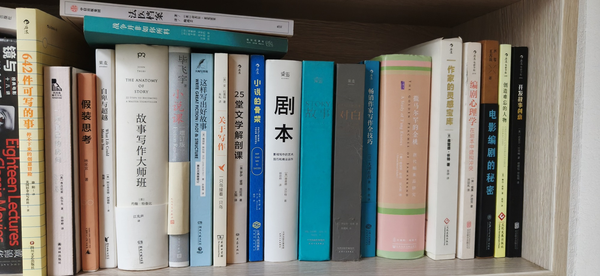

客房第二层右

- 一间自己的房间 英弗吉尼亚·伍尔夫著 谷妙婷译 译林出版社
- 法医档案 英奈杰尔·麦克雷里 中信出版集团
- 假装思考 林采宜著
- 自卑与超越 What Life Could Mean to You 奥阿尔弗雷德·阿德勒
- 战争并非如你所料 [法] 邦雅曼·布里约 著 [法] 阿卡迪·皮卡德 绘
- 故事写作大师班 约翰·特鲁比 著 江先声 译 湖南文艺出版社
- 小说课（增订版） 毕飞宇 人民文学出版社
- 这样写出好故事 WRITE GREAT FICTION: PLOT & STRUCTURE 第五次再版修订 美詹姆斯·斯科特·贝尔 湖南文艺出版社
- 关于写作：一只鸟接着一只鸟 美安拉莫特著 朱耘译 商务印书馆
- 25堂文学解剖课 美罗伊·彼得·克拉克著 王旭译 大象出版社
- 小说的骨架 OUTLINING YOUR NOVEL MAP 江西人民出版社
- 剧本：影视写作的艺术、技巧和商业运作 杨劲性译 美理查德·沃尔特著 天津人民出版社
- 故事 STORY 【美】罗伯特·麦基 天津出版传媒集团 果麦
- 对白 DIALOGUE 【美】罗伯特·麦基 天津出版传媒集团 果麦
- 畅销作家写作全技巧 【日】大泽在昌 程亮译 浙江人民出版社
- 撒马尔罕的金桃：唐代舶来品研究 THE GOLDEN PEACHES OF SAMARKAND: A Study of T'ang Exotics 【美】薛爱华作品 吴玉贵译 Edward Hetzel Schafer
- 作家的灵感宝库 美弗雷德·怀特著 张净译
- 编剧心理学：在剧本中建构冲突 美威廉·尹迪克 并迎兆译
- 电影编剧的秘密 王天兵 芦苇
- 创造难忘的人物 CREATING UNFORGETTABLE CHARACTERS Linda Seger 文化发展出版社
- 开发故事创意 美迈克尔·拉泽格著 胡晓华 侃明译
共 21 本书，上传于 2026-10-03 11:40:01。